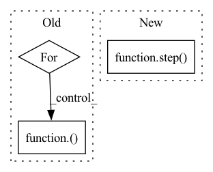

Pattern ID :4508
Before Change
src = input_embed(ctx, src)
zero = shard(jnp.zeros_like(src))
src = (ctx.parameters, src, zero, src, zero)
for i in range(ctx.model.depth):
src = reversible(ctx, spatial_mixing, (i + 1) == ctx.model.depth)(src)
src = reversible(ctx, feed_forward, (i + 1) == ctx.model.depth)( src)
src = src[1] + src[3]
return contrastive_output_embed(ctx, src) if ctx.training.contrastive else output_embed(ctx, src)
After Change
src = input_embed(ctx, src)
zero = shard(jnp.zeros_like(src))
src = (ctx.parameters, src, zero, src, zero)
src = lax.scan(step( ctx) , (src, jnp.zeros([])), None, ctx.dims.sizes.depth, unroll=ctx.model.scan_unroll)
return output_embed(ctx, revnet_out(src[0][1:]))
In pattern: SUPERPATTERN
Frequency: 3
Non-data size: 3
Instances Fragment ID: 16366985
Project Name: homebrewnlp/homebrewnlp-jax
Commit Name: 7ed6886625803952b38a63e565e4d05fa04a4f7d
Time: 2021-09-12
Author: 39779310+ClashLuke@users.noreply.github.com
File Name: src/model.py
M Class Name: AnonimousClass
N Class Name: AnonimousClass
M Method Name: body_ctx(2)
N Method Name: body_ctx(2)
M Parent Class:
N Parent Class:
M File Name: src/model.py
N File Name: src/model.py
M Start Line: 263
M End Line: 268
N Start Line: 263
N End Line: 265
Before Change
src = input_embed(ctx, src)
zero = shard(jnp.zeros_like(src))
src = (ctx.parameters, src, zero, src, zero)
for i in range(ctx.model.depth):
src = reversible(ctx, spatial_mixing, (i + 1) == ctx.model.depth)( src)
src = reversible(ctx, feed_forward, (i + 1) == ctx.model.depth)(src)
src = src[1] + src[3]
return contrastive_output_embed(ctx, src) if ctx.training.contrastive else output_embed(ctx, src)
After Change
src = input_embed(ctx, src)
zero = shard(jnp.zeros_like(src))
src = (ctx.parameters, src, zero, src, zero)
src = lax.scan(step( ctx) , (src, jnp.zeros([])), None, ctx.dims.sizes.depth, unroll=ctx.model.scan_unroll)
return output_embed(ctx, revnet_out(src[0][1:]))
Fragment ID: 16366984
Project Name: homebrewnlp/olmax
Commit Name: 7ed6886625803952b38a63e565e4d05fa04a4f7d
Time: 2021-09-12
Author: 39779310+ClashLuke@users.noreply.github.com
File Name: src/model.py
M Class Name: AnonimousClass
N Class Name: AnonimousClass
M Method Name: body_ctx(2)
N Method Name: body_ctx(2)
M Parent Class:
N Parent Class:
M File Name: src/model.py
N File Name: src/model.py
M Start Line: 263
M End Line: 268
N Start Line: 263
N End Line: 265
Before Change
if image.dtype!=np.uint8:
image = image.astype(np.int).astype(np.uint8)
for i,ind in enumerate(indices):
if i==ind:
image = getattr(self, self.primitives[ind])( image)
return image.astype(np.float32)
if __name__=="__main__":After Change
// if image.dtype!=np.uint8:
// image = image.astype(np.int).astype(np.uint8)
for i in range(len(self.primitives)):
image = step( i, image)
return image.astype(np.float32)
if __name__=="__main__": Fragment ID: 16366986
Project Name: shaofengzeng/superpoint-pytorch
Commit Name: 265137dadde08f144a97d48b3323ccc8b0ed7c76
Time: 2021-11-29
Author: shaofengzeng@163.com
File Name: dataset/utils/photometric_augmentation.py
M Class Name: PhotoAugmentor
N Class Name: PhotoAugmentor
M Method Name: __call__(2)
N Method Name: __call__(2)
M Parent Class:
N Parent Class:
M File Name: dataset/utils/photometric_augmentation.py
N File Name: dataset/utils/photometric_augmentation.py
M Start Line: 139
M End Line: 148
N Start Line: 164
N End Line: 166